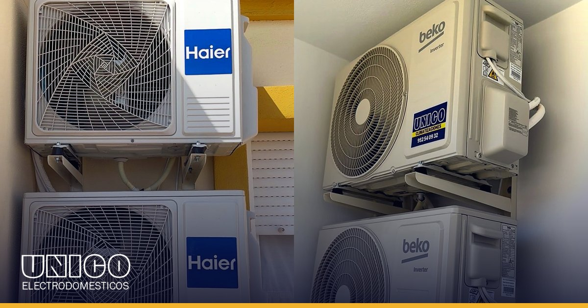
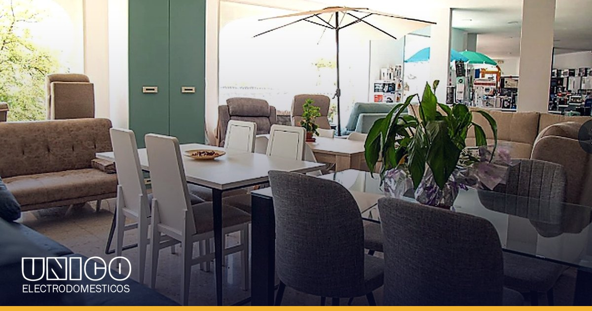

Blog y guías
Guías de compra y asesoramiento.

Cómo preparar el presupuesto de una cocina
Para presupuestar bien necesitamos las medidas de cada pared y la altura, la posición de agua, gas y enchufes, y una foto del espacio. Decid…
#presupuestococinaAxarquía #cocinasTorredelMar

Qué comprobar antes de comprar una lavadora
Mide ancho, fondo y alto del hueco y el sentido de apertura de la puerta. Elige la capacidad según las personas del hogar y comprueba la tom…
#comprarlavadoraVélez-Málaga #lavadoraTorredelMar

Cómo elegir muebles según medidas y uso
Mide la estancia, las puertas y el hueco de escaleras o ascensor para que el mueble entre. Piensa en el uso diario antes que en el estilo: a…
#mueblesAxarquía #mueblessalónNerja

Qué información necesitas para presupuestar aire acondicionado
Indica los metros de la estancia, su orientación y si hay mucho sol, y dónde iría la unidad exterior. Una foto del lugar ayuda mucho. La pot…
#aireacondicionadoinstalaciónNerja #aireacondicionadoAxarquía

Cómo elegir tamaño y firmeza de un colchón
El tamaño debe superar tu altura y dar espacio a quienes duermen en la cama. La firmeza es una cuestión de comodidad personal: comentarnos c…
#colchónAxarquía #comprarcolchónTorredelMar

Cómo equipar una vivienda de la Axarquía
Para una vivienda habitual, segunda residencia o alojamiento turístico, lo más práctico es coordinar cocina, electrodomésticos, muebles y cl…
#equiparviviendaAxarquía #equiparsegundaresidencia